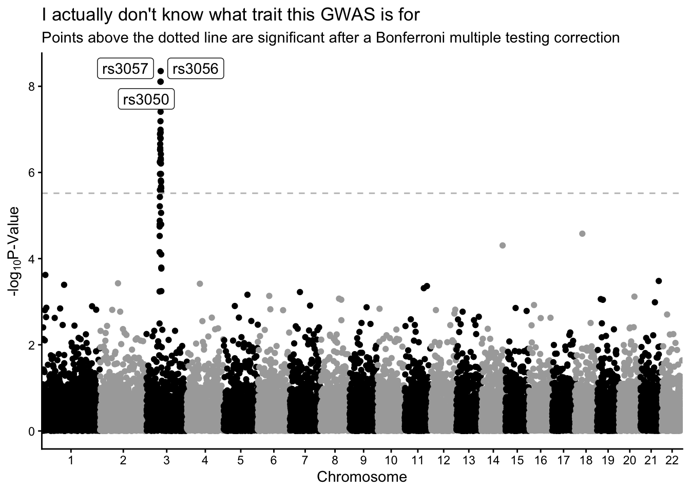

library(tidyverse) # for everything
library(ggrepel) # for repelling labels
library(qqman) # for gwas data
gwasResults <- qqman::gwasResultsManhattan Plots Recitation Solutions
Week 12
Introduction
We are going to practice making Manhattan plots today.
Investigate your data.
What are your columns?
glimpse(gwasResults)Rows: 16,470
Columns: 4
$ SNP <chr> "rs1", "rs2", "rs3", "rs4", "rs5", "rs6", "rs7", "rs8", "rs9", "rs…
$ CHR <int> 1, 1, 1, 1, 1, 1, 1, 1, 1, 1, 1, 1, 1, 1, 1, 1, 1, 1, 1, 1, 1, 1, …
$ BP <int> 1, 2, 3, 4, 5, 6, 7, 8, 9, 10, 11, 12, 13, 14, 15, 16, 17, 18, 19,…
$ P <dbl> 0.91480604, 0.93707541, 0.28613953, 0.83044763, 0.64174552, 0.5190…How many markers are there?
# dimensions of dataframe
dim(gwasResults)[1] 16470 4# how many unique SNP
length(unique(gwasResults$SNP))[1] 16470How are the markers distributed across the chromosomes?
The function summarize() from dplyr is sometimes masked by another function. If you have find you are getting an error when you call summarize() that says something like “argument”by” is missing, with no default” then specify explicitly that you want to use dplyr::summarize(). You could also use the British spelling summarise() and that also works. Here’s a stack overflow post where you can learn more.
gwasResults |>
group_by(CHR) |>
dplyr::summarize(min_bp = min(BP),
max_bp = max(BP),
number_of_markers = length(SNP))# A tibble: 22 × 4
CHR min_bp max_bp number_of_markers
<int> <int> <int> <int>
1 1 1 1500 1500
2 2 1 1191 1191
3 3 1 1040 1040
4 4 1 945 945
5 5 1 877 877
6 6 1 825 825
7 7 1 784 784
8 8 1 750 750
9 9 1 721 721
10 10 1 696 696
# ℹ 12 more rowsMake a Manhattan plot.
Color by chromosome, make sure the x-axis breaks are appropriate, be sure your y-axis is -log10 pvalue. Label the top 3 most significant points with their SNP number.
Create new column called NegLog10P which is the negative log10 pvalue.
gwasResults_neglog10 <- gwasResults |>
mutate(NegLog10P = -log10(P))Create a new variable called SNP_number so we can plot this on the x-axis.
gwasResults_neglog10 <- gwasResults_neglog10 |>
mutate(SNP_number = parse_number(SNP))
range(gwasResults_neglog10$SNP_number)[1] 1 16470Set axis for plotting.
(set_axis <- gwasResults_neglog10 |>
group_by(CHR) |>
summarise(min = min(SNP_number),
max = max(SNP_number),
center = (max - min)/2))# A tibble: 22 × 4
CHR min max center
<int> <dbl> <dbl> <dbl>
1 1 1 1500 750.
2 2 1501 2691 595
3 3 2692 3731 520.
4 4 3732 4676 472
5 5 4677 5553 438
6 6 5554 6378 412
7 7 6379 7162 392.
8 8 7163 7912 374.
9 9 7913 8633 360
10 10 8634 9329 348.
# ℹ 12 more rowsSet what the Bonferroni -log10 pvalue needs to be for significance.
bonferroni_pval <- -log10(0.05/nrow(gwasResults_neglog10))Indicate which are the significant points in the plot.
significant <- gwasResults_neglog10 |>
filter(NegLog10P > bonferroni_pval) |>
arrange(-NegLog10P) |>
slice(1:3) # take the first 3 which works bc we arranged descendingPlot
gwasResults_neglog10 |>
ggplot(aes(x = SNP_number, y = NegLog10P, color = as.factor(CHR))) +
geom_point() +
geom_label_repel(data = significant,
aes(x = SNP_number, y = NegLog10P, label = SNP)) +
scale_x_continuous(expand = c(0,0),
breaks = (set_axis$center + set_axis$min),
labels = set_axis$CHR) +
scale_color_manual(values = rep(c("black", "darkgray"), 17)) +
geom_hline(yintercept = bonferroni_pval, color = "grey", linetype = "dashed") +
theme_classic() +
theme(legend.position = "none") + # legend not really necessary
labs(x = "Chromosome",
y = expression("-log"[10]*"P-Value"),
title = "I actually don't know what trait this GWAS is for",
subtitle = "Points above the dotted line are significant after a Bonferroni multiple testing correction")